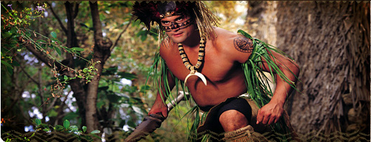

纽西兰群岛克爱欧阿（KiaOra！）意即为欢迎来到玻里尼西亚文化中心的纽西兰群岛（奥特爱瑞阿群岛）。在过去的一千多年以来纽西兰的毛利人，都是以“被白云宠罩着的土地”来形容自己的家乡。位于玻里尼西亚大三角地区西南方的纽西兰，是玻里尼西亚人中唯一可以感受到四季变化的岛屿。由于此一特点；使得纽西兰毛利族比其他位于热带地区的玻里尼西亚民族更能创造出独特的建筑型态及生活模式。 在中心的纽西兰村落，除了历史闻名可容纳40名勇士的独木舟战船展示之外，另有守望塔及贩卖纪念品与零食的木小屋。 |